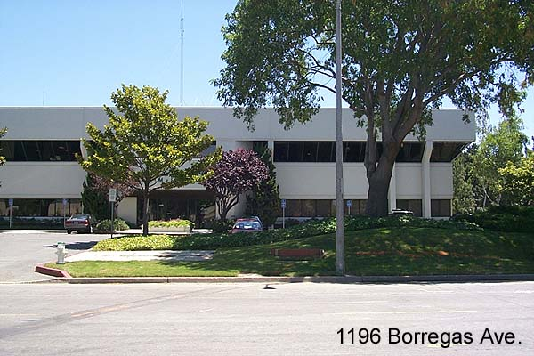
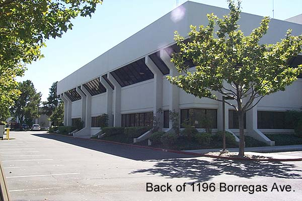

One of Silicon Valleys most well known
address' the Atari Corporate Headquarters (July 1984-1996)
After the purchase of Atari by the Tremails
in 1984, 1196 Borregas which originally was Atari
Corporate Research became Atari's new
Corporate Headquarters until 1996 when Atari was
reversed merged into JTS Corp which filed
for bankruptcy in 1998.

According to several former Atari employees,
the shape of the structural supports on the sides of the
building were designed to mimic the sweeping
shape of the Atari "Fuji" symbol. Once a jewel in
Atari's crown of buildings, with its interior
adorned with expensive and rare paintings and other works
of art while owned by Warner Communications
and used as Corporate Research, by 1996 the building had
fallen into severe disrepair.
The exterior was in need of a new paint job and the interior ceiling tiles
were yellow stained and warped from years
of neglect by Atari Corp management from 1984-1996.